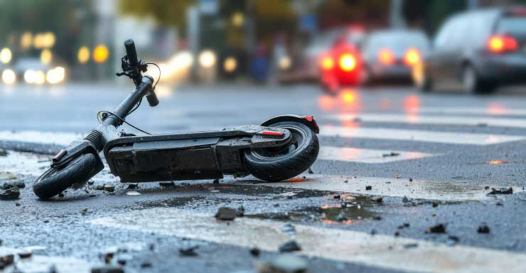
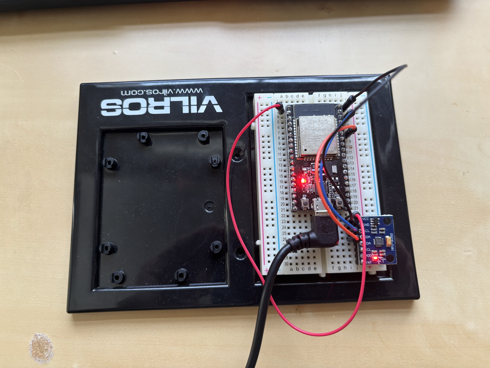

Overview
This project detects crashes and falls using an ESP32 paired with an accelerometer and gyroscope, then notifies a web server over Wi-Fi. The goal was a deeper understanding of embedded systems, C++, and wireless networking — but the end application is a wearable module that could genuinely help the elderly, cyclists and motorcyclists.
Why This Topic
What drew me in was the idea of a stroke detection and notification device — a fall detection module alongside other biosensors. Given the project timeframe, focusing on the fall and crash detection half made more sense.
I am interested in wearable health monitoring generally, and several elderly members of my family have suffered strokes or serious fall injuries. In many cases they were alone and went hours before anyone found them, which makes an enormous difference to recovery and treatment.

Approach
I approached this from a thresholding perspective, researching what acceleration levels actually characterise a crash on a bike or e-scooter — roughly 200–700 m/s². I set the threshold at the lower bound deliberately: a false positive is far less costly than a missed crash.
Acceleration alone is not enough, though. Real crashes have a signature: free-fall before or after impact, or abrupt stillness after impact. So the threshold trigger is coupled with pre-impact and post-impact analysis. Each one that matches, plus how far past threshold the acceleration went, raises a collision likelihood score. Once a crash is confirmed, a message goes to a Wi-Fi web server with the timestamp and that score.
Hardware
An ESP32 Dev module and an MPU6050 (accelerometer and gyroscope). I also considered a NEO-6M GPS and a SIM800L for location reporting and cellular connectivity, but cost ruled both out for this build. Working hands-on here taught me to read pinouts properly and gave me a working understanding of I2C.


Software Architecture
The hardware was programmed in C++ through PlatformIO in VS Code. PlatformIO gave me an organised way to build and flash, a choice of frameworks, and a library manager that already had MPU6050 drivers. I had Python experience but was fairly new to C++, which is where I picked up file structure, OOP, and using pointers for memory management.
Rather than one monolithic file, I split the code into three programs that mirror the actual tasks:
- Data collection — uses the MPU6050 driver functions to keep the IMU object updated with current acceleration and gyro readings.
- Wi-Fi notification — uses the ESP32’s built-in Wi-Fi and HTTP POST requests to reach a Flask server running on my computer, sending the crash message and likelihood score.
- Main — integrates the two and holds the detection algorithm.
The detection loop
Main splits into setup and a real-time loop. Setup calibrates the MPU6050 by averaging the first ten readings and subtracting that offset from everything after, which normalises the data and cancels the constant 1 g of gravity.
In the loop, readings come in, get printed to the serial monitor, and the magnitude of acceleration is recorded — magnitude rather than per-axis, so detection is independent of how the device is oriented. A rolling history of the previous X magnitude values is kept so an impact can be analysed in context.
When magnitude exceeds the threshold, it is flagged as an impact. Pre-impact analysis checks whether the device was in free-fall beforehand; if so, the likelihood score goes up. Then Y samples after the impact are analysed for free-fall or stillness; again, a match raises the score. Once both analyses finish, the notification goes out.
Demo
The clip below shows the system running: live acceleration data, impact detection, and the server notification. For easy testing the ESP32 is dropped about three feet onto a hard surface — visible as the spike to roughly 23 m/s² at 0:05 — against a 20 m/s² threshold. In the real application that threshold would be far higher, 100 m/s² at minimum.
What I Learned
I2C fundamentals, interfacing with hardware through PlatformIO, C++ beyond the basics, designing real-time detection algorithms that have to make a decision on incomplete data, and the wireless networking to get that decision somewhere useful. Validation came from 10-foot drop tests, bicycle impact testing and routine exercise as a negative control, landing at 90% detection accuracy with a 2% false positive rate.